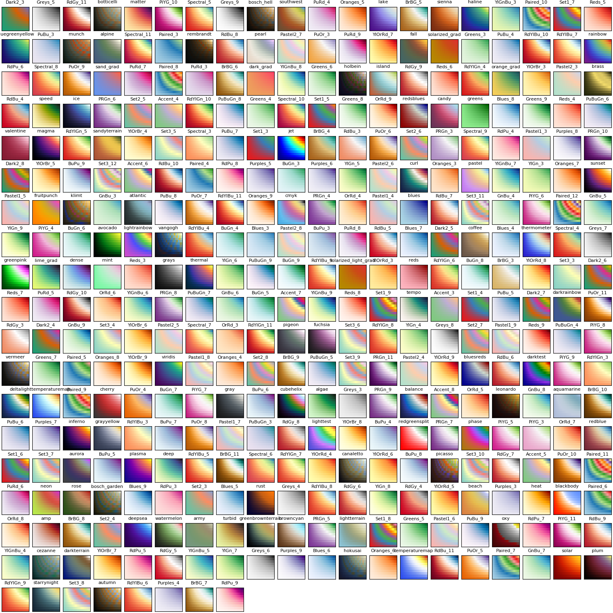
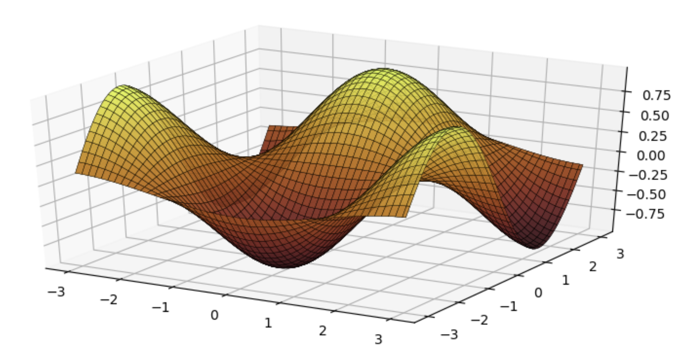

Plotting
Plots.jl
Tom Breloff's amazing superplotting package, Plots.jl can use colorschemes.
With the contour() function, use cgrad() to read the colorscheme as a gradient. This renaissance-looking plot uses the leonardo scheme:
using Plots, Colorschemes
x = 1:0.3:20
y = x
f(x,y) = begin
sin(x) + cos(y)
end
contour(x, y, f, fill=true, seriescolor=cgrad(ColorSchemes.leonardo))
(You can use c as a short cut for seriescolor.)
With other plots, use the palette keyword:
plot(Plots.fakedata(100, 20),
w=4,
background_color=ColorSchemes.vermeer[1],
palette=ColorSchemes.vermeer)
You can list all colorschemes with a set of PyPlot heatmap plots:
pyplot()
z = (1:10)*(1:33)'
map(cs -> PlotUtils.register_gradient_colors(Symbol(cs), eval(ColorSchemes, cs)), schemes);
cschemes = keys(PlotUtils._gradients)
plot([heatmap(z,fc=cm,leg=false,title=cm,ticks=nothing, titlefont = font(8)) for cm=cschemes]..., size=(1500,1500))
Gadfly
Here's how you can use ColorSchemes in Gadfly:
x = repeat(collect(1:20), inner=[20])
y = repeat(collect(1:20), outer=[20])
plot(x=x, y=y,
color=x+y,
Geom.rectbin,
Scale.ContinuousColorScale(p -> get(ColorSchemes.sunset, p)))
Winston
If you prefer Winston.jl for plotting, you can use colorschemes with imagesc:
using Winston
klimt = ColorSchemes.klimt
Winston.colormap(klimt)
Winston.imagesc(reshape(1:10000,100,100))
Sometimes you'll want a smoother gradient with more colors. You can use get(scheme, n) to generate a more detailed array of colors, varying n from 0 to 1 by 0.001:
brasstones = ColorSchemes.brass
brasstonesmooth = [get(brasstones, i) for i in 0:0.001:1]
Winston.colormap(brasstonesmooth)
Winston.imagesc(reshape(1:10000,100,100))
PyPlot
Colorschemes can be used with the cmap keyword in PyPlot:
using PyPlot, Distributions
solar = ColorSchemes.solar
n = 100
x = linspace(-3, 3, n)
y = linspace(-3,3,n)
xgrid = repmat(x',n,1)
ygrid = repmat(y,1,n)
z = zeros(n,n)
for i in 1:n
for j in 1:n
z[i:i,j:j] = pdf(MvNormal(eye(2)),[x[i];y[j]])
end
end
fig = PyPlot.figure("pyplot_surfaceplot",figsize=(10,10))
ax = fig[:add_subplot](2,1,1, projection = "3d")
ax[:plot_surface](xgrid, ygrid, z, rstride=2,edgecolors="k",
cstride=2,
cmap=ColorMap(solar),
alpha=0.8,
linewidth=0.25)